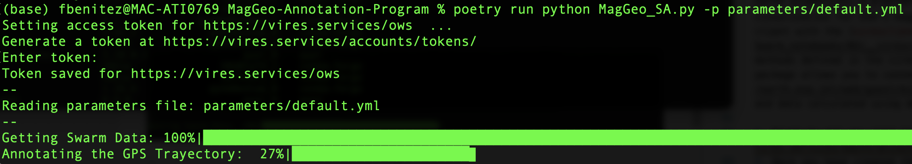

Installation
How to install and Run MagGeo on your machine
To install and run MagGeo you need to follow the following steps.
1. Install Miniconda
Recommended setup if starting without Python already
Install Miniconda: https://docs.conda.io/en/latest/miniconda.html
2. Clone the MagGeo repository:
You will need Git (version control system) to clone MagGeo, install first accordingly (https://git-scm.com/downloads)
Open a new terminal (MacOS, Linux) or command prompt (Windows) and run:
git clone https://github.com/MagGeo/MagGeo-Annotation-Program.git3. Change the directory
You will need to change the directory to where you cloned/downloaded the MagGeo repository. If you donwloaded it–Do not forget to unzip the folder before using it. If you’re using the terminal on Linux or macOS, it is the same syntax to change directory.
cd MagGeo-Annotation-Program4. Create MagGeoEnv environment – this should take around five minutes.
We have create a new virtual environment for you, thus you can keep MagGeo isolated from other python environment you might have. In the terminal run:
conda env create --file environment.yml5. Activate MagGeoEnv
conda activate MagGeoEnv6. Sign Up at VirES for Swarm - VRE and get a web client Token
MagGeo use VirES (Virtual environments for Earth Scientists) a platform for data & model access, analysis, and visualization for ESA’s magnetic mission Swarm. This is a powerful client with the viresclient API that provide several classes and methods defined in the vires client package. The viresclient Python package allows you to connect to the VirES server to download Swarm data and data calculated using magnetic models.
- First to all you need to create an account and Sign up using https://vires.services/oauth/accounts/signup/
- Once you have created the account, Log In https://vires.services/
- Follow the instructions in https://viresclient.readthedocs.io/en/latest/access_token.html to get your token.
- Copy and Paste your token after –token in the following command
7. Run MagGeo using the sample data.
MagGeo can be excuted using the same terminal you have been using in the previous steps. If you want to get familiar with MagGeo and get an annotated GPS trajectory using the data we have included as an example (data folder), run the following command (replace your virES token where is requiered):
python MagGeo_main.py -p parameters/default.yml --token YOUR_TOKEN_HERENow MagGeo will start to download the Swarm Data.

Once the data has been downloaded, MagGeo will process it to make the annotation process ( for more information about how this is done, visit our methodological paper in Movement Ecology)
The last step MagGeo does is annotating the gathered data, that would take more time depending how big is your dataset. In our example it only takes 4 seconds.

And Congrats you got annotated data. The results will be stored in the folder results for your futher analysis. You will find a .csv file named like GeoMagResult_+name_of_your_csv_file_trajectory.
7.1 Run MagGeo using your data.
If you are ready to annotate your GPS trajectories. You need to update the parameters file in MagGeo to let the program know what are the correct values of your data.
- Copy the csv file with your trajectories into the data folder.
- Open and Update the following parameters in the file
default.ymllocated in parameters folder: gpsfilename: "name_of_your_trajectory.cvs"Include the name of your Input data. The GPS trajectory you need to annotate with the geomagnetic satellite data.Lat: "latitude_column_name_in_your_trajectory"Long: "longitude_column_name_in_your_trajectory"DateTime: "Date_Time_column_name_in_your_trajectory"make sure you have one column that includes Date and Time values together.altitude: "altitude_column_name_in_your_trajectory"if you do not have any altitute column, you can leave that in blank, including only""
Save your changes, return to the Terminal and run:
python MagGeo_main.py -p parameters/default.yml --token YOUR_TOKEN_HERE